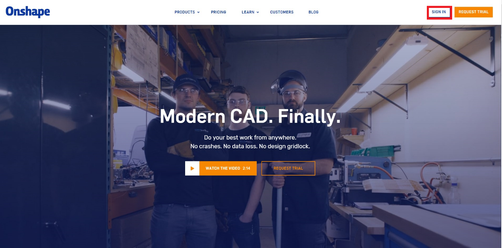
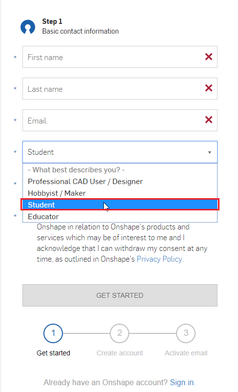
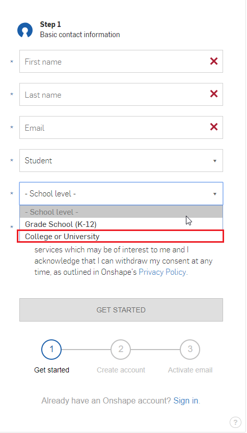
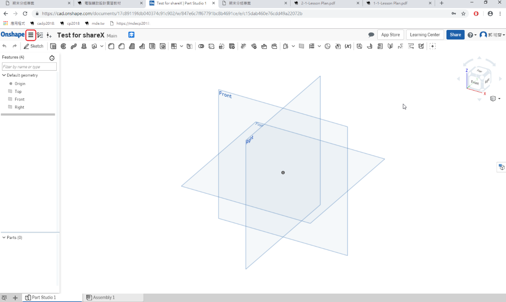
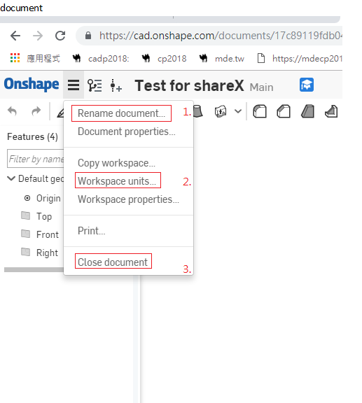
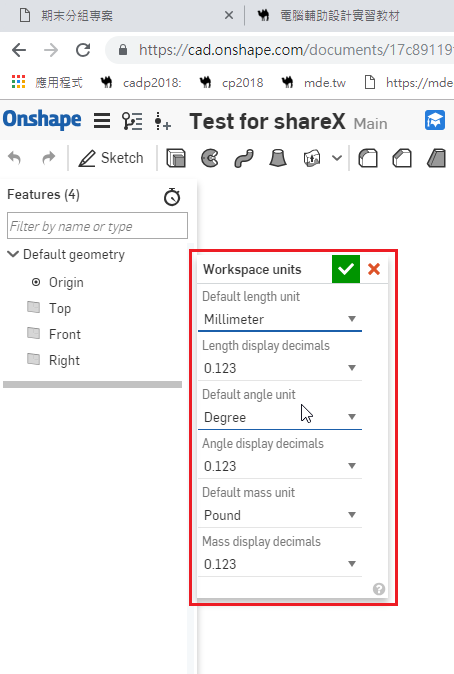
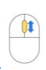
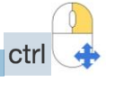
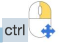

Interface
How to creating an Account?



Introduce the interface.


- Rename document 文件重新命名
- Workspace unit 操作介面單位
- Close document 關閉文件

工作區單位
1. Default length unit
長度單位
2. Length display decimals
長度顯示小數
3. Default angle unit
角度單位
4. Angle display decimals
角度顯示小數
5. Default mass unit
質量單位
6. Mass display decimals
質量顯示小數
- Move the Graphics Area
移動作圖區

3D 旋轉：點滑鼠右鍵 + 拖移

放大縮小：往前滾動滾輪 -> 放大，往後滾動滾輪 -> 縮小
 

Tutorials << Previous Next >> Geometry